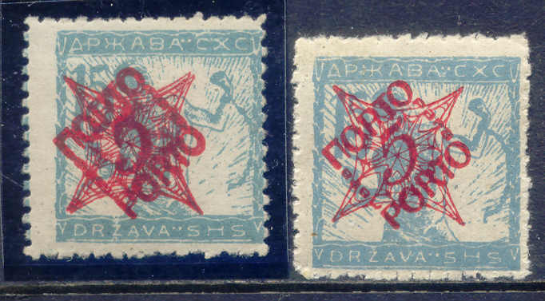
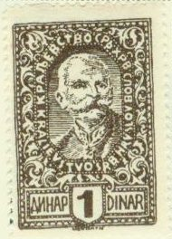
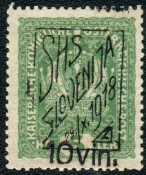
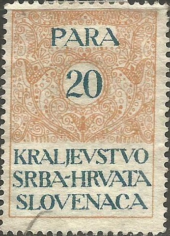

Return To Catalogue - Yugoslavia, general issues - Bosnia - Stamps used in Bosnia - Croatia - Montenegro - Serbia - Vuja-STT (or Vujna STT) on Yugoslavia
Note: on my website many of the
pictures can not be seen! They are of course present in the
catalogue;
contact me if you want to purchase the catalogue.
Stamp of Austria, used in Laibach (Ljubljana, Slovenia):
In 1918 several stamps of Hungary were overprinted "HRVATSKA SHS" to be used in Croatia. The overprints are not the same on all stamps.
Many forged overprints exist!
On bird (Turul) issue 6 f olive 50 f red on blue On 1916 charity issue
10 + 2 f red (soldier) 15 + 2 f violet (soldier) 40 + 2 f red (bird) On 1916 Charles and Zita issue
10 f lilac 15 f red On 1918 Charles and Zita issue


Misprint, the overprint should have been red
10 f red 20 f brown 25 f blue 40 f olive On Harvester issue
(15 f white numerals)
2 f brown 3 f lilac 5 f green 6 f blue 10 f red 15 f violet (violet numerals) 15 f violet (white numerals) 20 f brwon 25 f blue 35 f brown 40 f olive On Parliament issue
50 f lilac 75 f blue 80 f green 1 K red 2 K brown 3 K violet and grey 5 K brown 10 K brown and lilac
On the lower three values there is a bar at the bottom, in the higher values the word "KRUNA" (1 K) or "KRUNE" is printed at the bottom.
Value of the stamps |
|||
vc = very common c = common * = not so common ** = uncommon |
*** = very uncommon R = rare RR = very rare RRR = extremely rare |
||
| Value | Unused | Used | Remarks |
| 6 f | * | * | Turul issue, watermark 'Crosses' |
| 50 f | ** | ** | Turul issue, watermark 'Crosses' |
| 10 + 2 f | * | * | 1916 war charity issue (soldier) |
| 15 + 2 f | c | c | 1916 war charity issue (soldier) |
| 40 + 2 f | * | * | 1916 charity issue |
| 10 f | *** | *** | 1916 Queen Zita |
| 15 f | *** | *** | 1916 King Charles |
| 10 f | c | c | 1918 King Charles |
| 20 f | c | c | 1918 King Charles |
| 25 f | * | * | 1918 King Charles |
| 40 f | c | * | 1918 Queen Zita |
| On Harvester issue | |||
| 2 f | c | c | |
| 3 f | c | c | |
| 5 f | c | c | |
| 6 f | c | c | |
| 10 f | * | * | |
| 15 f | c | c | Violet numerals |
| 15 f | *** | *** | White numerals |
| 20 f | c | c | |
| 25 f | c | c | Exists with inverted overprint |
| 35 f | * | * | |
| 40 f | * | * | |
| On Parliament issue | |||
| 50 f | c | c | |
| 75 f | * | * | |
| 90 f | * | * | |
| 1 K | c | * | |
| 2 K | * | * | |
| 3 K | * | * | |
| 5 K | *** | *** | |
| 10 K | *** | *** | |
On newspaper stamp of Hungary of 1916 (Surgos), overprint "HRVATSKA SHS ZURNO"
2 f green and red
Value of the stamps |
|||
vc = very common c = common * = not so common ** = uncommon |
*** = very uncommon R = rare RR = very rare RRR = extremely rare |
||
| Value | Unused | Used | Remarks |
| 2 f | c | c | |
On Newspaper stamp of Hungary of 1914 (Hirlapjegy), overprinted "HRVATSKA SHS"
2 f orange
Value of the stamps |
|||
vc = very common c = common * = not so common ** = uncommon |
*** = very uncommon R = rare RR = very rare RRR = extremely rare |
||
| Value | Unused | Used | Remarks |
| 2 f | c | c | |
On Postage Due stamps of Hungary with overprint in blue "HRVATSKA SHS"
(Reduced size)
1 f green and red 2 f green and red 10 f green and red 12 f green and red 15 f green and red 20 f green and red 30 f green and red 50 f green and black
Value of the stamps |
|||
vc = very common c = common * = not so common ** = uncommon |
*** = very uncommon R = rare RR = very rare RRR = extremely rare |
||
| Value | Unused | Used | Remarks |
| 1 f | *** | *** | |
| 2 f | * | * | |
| 10 f | * | * | |
| 12 f | *** | *** | |
| 15 f | * | * | |
| 20 f | c | c | |
| 30 f | * | * | |
| 50 f | *** | *** | |
Genuine misprint, wrong type of overprint:

Example of a forged "HRVATSKA SHS" overprint:

Some non-authorised local overprints also exist; three types of "SHS" and "Preko-murje SHS". All these local overprints have been forged. Example (I don't know if these are genuine overprints):

Preko-murje SHS overprint in violet
Certified genuine local 'SHS' overprints
2 h brown (woman) 3 h violet (woman) 5 h green (woman) 10 h red (sailor) 20 h brown (sailor) 25 h blue (sailor) 45 h olive (sailor) 1 K red (falcon) 3 K lilac (falcon) 5 K brown (falcon)
These stamps have perforation 11 1/2. I have seen imperforate, partly perforated and doubly perforated stamps.
Value of the stamps |
|||
vc = very common c = common * = not so common ** = uncommon |
*** = very uncommon R = rare RR = very rare RRR = extremely rare |
||
| Value | Unused | Used | Remarks |
| 2 h | c | c | |
| 3 h | c | c | |
| 5 h | c | c | |
| 10 h | c | c | |
| 20 h | c | c | |
| 25 h | c | c | |
| 45 h | * | * | |
| 1 K | c | c | |
| 3 K | * | * | |
| 5 K | * | * | |
The values 2 h, 3 h, 5 h and 20 h were printed in blocks of 10. The values 10 h, 25 h and 45 h were printed in rows of 10 stamps. Specialists distinguish several types of some of these stamps:
The 10 types of the 2 h value
* The 2 h value was printed in two types. Type I is the normal type. Type II only appears once in a block of 10 stamps and has an opening in left upper part of the frame surrounding the '2'.
The 10 types of the 3 h value
* The 3 h was also printed in sheets of 10 stamps and 10 different types exist (one for each position on the sheet). They differ in the shape of the '3'.
The 10 types of the 5 h value
* The 5 h was printed in blocks of 10 stamps which exists in
10 different types (differing in the '5').
* The 10 h only exists in one type.
* The 20 h exists in 3 types, in type I the last 'A' of
'HRVATSKA' has a line attached to the top (appears 6 times in a
sheet of 10 stamps), in type II, the 'A' doesn't have this line
(appears 3 times in a sheet) and finally type III has a dot in
the 'V' of 'HRVATSKA' (appears once in a sheet)
* The 20 h has 10 different types differing in the '2' (also
printed in sheets of 10 stamps).
* The 45 h exists in two types. Type I is the most common (9 out
of 10 stamps), type II (1 out of 10 stamps) has a curved top part
of the '5' and a line at the bottom left part of the 'N' of
'DRZAVNA'.
Man breaking chains (small size) 3 h violet 5 h green 10 h red 15 h blue Man breaking chains (larger size) 20 h brown 25 h blue 30 h lilac 40 h yellow Woman 50 h green 60 h grey Child 1 K red 2 K blue King 5 k red 10 k blue 15 k green (1920) 20 k lilac (1920)
These stamps exist perforated or rouletted. Specialists distinguish two types of the 3 h to 15 h stamps: with left chain far away from bottom frame and with left chain touching the bottom frame. The 20 h to 40 h stamps also exist in two types; with faintly outlined mountains and with distinct mountains.
Two types of the 3 h to 15 h stamps; chain not touching and chain
touching the bottom frame
Two types of the 20 h to 40 h stamps; faintly outlined and
clearly visible mountains
Value of the stamps |
|||
vc = very common c = common * = not so common ** = uncommon |
*** = very uncommon R = rare RR = very rare RRR = extremely rare |
||
| Value | Unused | Used | Remarks |
| 3 h | c | c | |
| 5 h | c | c | |
| 10 h | * | c | |
| 15 h | c | c | |
| 20 h | * | c | |
| 25 h | * | c | |
| 30 h | * | c | |
| 40 h | * | c | |
| 50 h | * | c | |
| 60 h | * | * | |
| 1 K | * | c | |
| 2 K | * | c | |
| 5 K | c | c | |
| 10 K | *** | * | |
| 15 K | R | R | |
| 20 K | *** | ** | |
With 'PORTO' overprint in fancy design (1920)

With 'double overprint' left and with normal overprint right
5 (red) on 15 h blue 10 (red) on 15 h blue 20 (red) on 15 h blue 50 (red) on 15 h blue 1 D (blue) on 30 h lilac 3 D (blue) on 30 h lilac 8 D (blue) on 30 h lilac

Man breaking chains 5 pa olive 10 pa green 15 pa brown 20 pa red 25 pa brown Woman 40 pa violet 45 pa yellow 50 pa blue 60 pa brown King 1 D brown 2 D violet 4 D green 6 D brown 10 D brown
Value of the stamps |
|||
vc = very common c = common * = not so common ** = uncommon |
*** = very uncommon R = rare RR = very rare RRR = extremely rare |
||
| Value | Unused | Used | Remarks |
| 5 pa | * | c | |
| 10 pa | c | c | |
| 15 pa | c | c | |
| 20 pa | * | * | |
| 25 pa | * | c | |
| 40 pa | c | c | |
| 45 pa | c | c | |
| 60 pa | c | c | |
| 1 D | c | c | |
| 2 D | c | c | With orange wavy lines underprint |
| 4 D | * | * | |
| 6 D | c | * | With orange wavy lines underprint |
| 10 D | c | * | With black wavy lines underprint |
5 h red 10 h red 20 h red 50 h red 1 K blue 5 K blue 10 k blue
Value of the stamps |
|||
vc = very common c = common * = not so common ** = uncommon |
*** = very uncommon R = rare RR = very rare RRR = extremely rare |
||
| Value | Unused | Used | Remarks |
| 5 h | c | c | |
| 10 h | c | c | |
| 20 h | c | c | |
| 50 h | * | * | |
| 1 K | ** | ** | |
| 2 K | * | * | |
| 10 K | * | * | |
The next stamps of Austria with overprint "SHS SLOVENIJA 29 /x 1918" are a mystery to me:

I've been told that this is an unofficial local issue, made in 1918 in the Slovenian city of Celje?
2 h blue 6 h lilac 10 h red 20 h green Surcharged

2 s on 6 h lilac 2 s on 10 h red 2 s on 20 h green 3 s on 2 h blue 5 s on 6 h lilac
The imperforated stamps were newspaper stamps of Bosnia, later perforated stamps were used as postage stamps in Yugoslavia.
Value of the stamps |
|||
vc = very common c = common * = not so common ** = uncommon |
*** = very uncommon R = rare RR = very rare RRR = extremely rare |
||
| Value | Unused | Used | Remarks |
| 2 h | c | c | |
| 6 h | * | * | |
| 10 h | * | c | |
| 20 h | * | c | |
| Surcharged | |||
| 2 s on 6 h | *** | *** | |
| 2 s on 10 h | *** | *** | |
| 2 s on 20 h | * | * | |
| 3 s on 2 h | c | c | |
| 5 s on 6 h | c | c | |

Even though these stamps are quite common, forgeries exist. The
stamp on the right hand side is a forgery, the design is not as
sharp as in the genuine stamp.

(Reduced size)
10 h red 20 h violet 25 h blue 45 h green
These stamps have perforation 11 1/2 and were printed in sheets of 100. Two types exist of all values (in the same sheet). It seems that these stamps were only valid for one day. Bogus issues in different colours exist, also 'proofs' specially made for stamp collectors.
Value of the stamps |
|||
vc = very common c = common * = not so common ** = uncommon |
*** = very uncommon R = rare RR = very rare RRR = extremely rare |
||
| Value | Unused | Used | Remarks |
| 10 h | *** | *** | 30000 stamps printed |
| 20 h | *** | *** | 30000 stamps printed |
| 25 h | *** | *** | 25000 stamps printed |
| 45 h | R | R | 15000 stamps printed |
Forgeries seem to exist (at least two types, they are described in the Bilig forgery book).

(Colour error, 10 pa lilac the colour should be red, this is the
colour of the 10 D value!)
10 pa red 30 pa green 50 pa violet 1 D brown 2 D blue 5 D orange 10 D lilac 25 D red 50 D green
Specialists distinguish between the Belgrade printing (defective perforations) and the Vienna printing (perforated 10 1/2). The value inscriptions are also slightly different between the two types.
Left Belgrade printing, right Vienna printing
Value of the stamps |
|||
vc = very common c = common * = not so common ** = uncommon |
*** = very uncommon R = rare RR = very rare RRR = extremely rare |
||
| Value | Unused | Used | Remarks |
| 10 pa | c | c | |
| 30 pa | * | * | |
| 50 pa | c | c | |
| 1 D | * | c | |
| 2 D | * | c | |
| 5 D | *** | * | |
| 10 D | *** | * | |
| 25 D | R | ** | |
| 50 D | R | *** | |
(Sorry, no picture available yet, if anybody posesses a picture, please contact me!)
2 f yellow
Value of the stamps |
|||
vc = very common c = common * = not so common ** = uncommon |
*** = very uncommon R = rare RR = very rare RRR = extremely rare |
||
| Value | Unused | Used | Remarks |
| 2 f | c | c | |
2 h grey 2 h blue 4 h grey 4 h blue 6 h grey (2 types, '6' different) 10 h grey 10 h blue 30 h grey Surcharged with fancy pattern and value
2 pa on 2 h grey 2 pa on 2 h blue 4 pa on 2 h grey 4 pa on 2 h blue 5 pa on 2 h grey 6 pa on 2 h blue 10 pa on 2 h grey 10 pa on 2 h blue 30 pa on 2 h grey 30 pa on 2 h blue
The values of the grey and blue stamps show slight differences. The grey stamps were printed in Ljubliana and the blue ones in Vienna.
Value of the stamps |
|||
vc = very common c = common * = not so common ** = uncommon |
*** = very uncommon R = rare RR = very rare RRR = extremely rare |
||
| Value | Unused | Used | Remarks |
| 2 h grey | c | c | |
| 2 h blue | c | c | |
| 4 h grey | c | c | |
| 4 h blue | * | * | |
| 6 h grey | * | * | Two types |
| 10 h grey | c | c | |
| 10 h blue | * | * | |
| 30 h | c | * | |
| Surcharged | |||
| 2 pa on 2 h grey | c | c | |
| 2 pa on 2 h blue | c | c | |
| 4 pa on 2 h grey | c | c | |
| 4 pa on 2 h blue | c | c | |
| 6 pa on 2 h grey | c | * | |
| 6 pa on 2 h blue | c | c | |
| 10 pa on 2 h grey | * | * | |
| 10 pa on 2 h blue | * | * | |
| 30 pa on 2 h grey | ** | ** | |
| 30 pa on 2 h blue | * | * | |
These stamps exist with overprint 'KGCA 1920' and value, they were issued for Carinthia in 1920. The following values exist: 5 pa on 4 h, 15 pa on 4 h, 25 pa on 4 h, 45 pa on 2 h, 50 pa on 2 h and 2 D on 2 h (lower values: unused: c, used: *, the 2 D on 2 h: **):

I have seen 10 pa brown and grey, 20 pa blue and orange and 30 pa
dark blue and light blue.

I have seen the values: 10 pa green, 20 pa violet, 20 pa blue, 50
pa red.


{kind=link}
{kind=link}
{kind=link}
{kind=link}
{kind=link}
{kind=link}